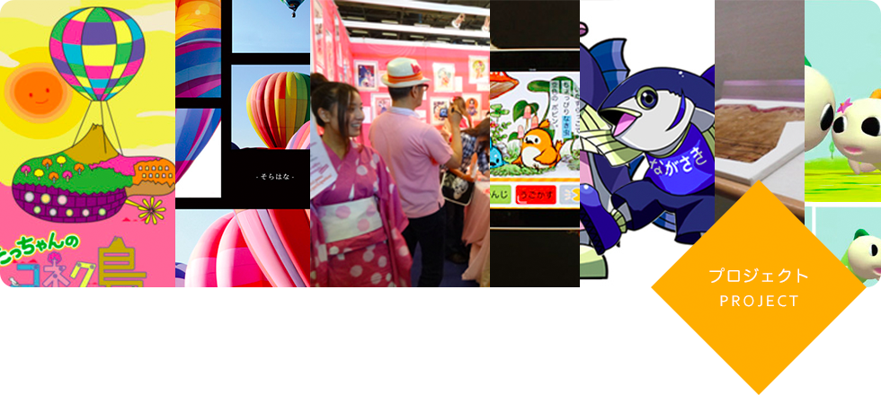
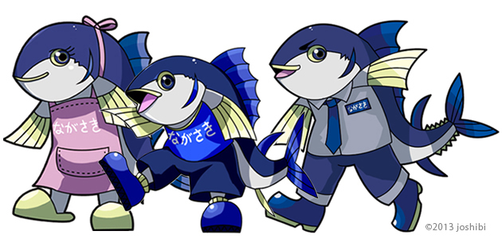
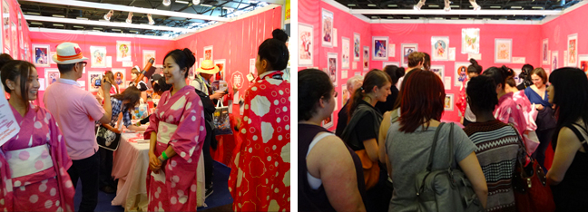

第二回長崎発「旨い本マグロまつり」プロジェクトのお知らせ！
2013年12月に開催される第二回長崎発「旨い本マグロまつり」にメディア表現領域が協力しています。この催しは、長崎県まぐろ養殖協議会主催の催しで、養殖クロマグロの本場・長崎県で、養殖クロマグロの美味しさや養殖業者の品質向上への取組を広く多くの方に周知することが目的のイベントです。メディア表現領域では、このイベントのキャラクターデザイン、ポスターのデザイン、イベントを行います。
長崎発「旨い本マグロまつり」開催概要
日時：2013年12月14日（土）10：00～15：00
場所：長崎出島ワーフ
長崎県長崎市出島1－1
長崎出島ワーフの会場では、子ども達に楽しんでもらえるイベントも企画されており、プロジェクトメンバーであるメディア表現領域3年生が「まぐろのごはん」というユニークなゲームなどを実施する予定です。私達にとって大切な食文化を支える水産資源はとても重要です。メディア表現領域では、これからも積極的にアートやデザインの力で社会貢献して行きたと考えています。
また、出島ワーフの会場に設けられる女子美ブースで本プロジェクトを率いている内山教授と季里教授にメディア表現領域の授業のことなどを聞くことができます。女子美術大学やメディア表現領域に興味がある方は是非いらして下さい。

JAPAN EXPO2013 女子美ブースに大勢の方がいらして下さいました！
2013年7月4日（木）～7日（日）、パリ、ノール・ヴィルパント展示会会場で、JAPAN EXPO2013が開催されました。今年の入場者数は、昨年よりも2万人増え23万人となり、日本の文化がフランスをはじめヨーロッパ各地から集まった方々に支持され続けていることがわかります。 今年のJAPAN EXPO2013女子美ブースでは学内で募集した学生作品を展示し、女子美の学生作品を見て頂き、好きな作品にシールで投票してもらいました。 4日間の開催期間中に2563名の方が投票して下さる盛況ぶりで、色々な方に作品に対するコメントを頂き高い評価を得ました。 得票が多かった作品からフランスで支持される表現の傾向がわかり、世界に向かってどのような作品制作をすればいいのかが伺えます。国際的な感覚を得ることができる意義深い試みの一つとして、これからも海外での発表の場を積極的に設けて行きたいと考えています。
